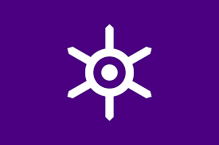
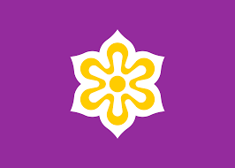

Day 4: Exploring Japan

This image captures the essence of Japan, highlighting its rich blend of traditional culture and modern innovation.
Introduction to Japan
Japan is an island country in Asia. It is known for its technology, culture, and beautiful landscapes. The capital city is Tokyo.
Big Cities
Other big cities in Japan include Osaka, Kyoto, and Hiroshima. Each city has its own unique culture and attractions.
Natural Beauty
Japan is known for its cherry blossoms, Mount Fuji, and beautiful gardens.
People and Languages
People in Japan speak Japanese. They enjoy festivals, like Hanami and Obon, and delicious food, like sushi and ramen.
Famous Japanese
Some famous people from Japan include Akira Kurosawa, a famous filmmaker, and Marie Kondo, a well-known organizing consultant.
Prefectures, Their Flags, and Capital Cities in Japan
| Prefecture | Flag | Capital City |
|---|---|---|
| Tokyo |  | Tokyo |
| Osaka |  |
Osaka |
| Kyoto |  | Kyoto |
| Hokkaido | Sapporo |
Tokyo

The iconic Tokyo Tower, a communications and observation tower in the Shiba-koen district of Minato, Tokyo.

Shibuya Crossing, one of the world's busiest pedestrian crossings, known for its vibrant atmosphere and neon lights.
Osaka

Osaka Castle, a historic landmark and a major tourist attraction, especially during the cherry blossom season.

Dotonbori, a popular tourist destination in Osaka, known for its lively atmosphere and street food.
Kyoto

The Fushimi Inari Shrine, famous for its thousands of vermilion torii gates, leading into the wooded forest of the sacred Mount Inari.

The traditional streets of Gion, a district in Kyoto, known for its geishas and historic teahouses.
Hokkaido

The stunning landscapes of Hokkaido, known for its national parks, hot springs, and ski resorts.

Sapporo, the largest city on the island of Hokkaido, famous for its annual snow festival and delicious seafood.
Did you know?
Japan has more than 6,800 islands, with four main islands: Honshu, Hokkaido, Kyushu, and Shikoku.
The Shinkansen, or bullet train, is one of the fastest and most efficient train systems in the world, reaching speeds up to 320 km/h (200 mph).
Japan is home to 20 UNESCO World Heritage sites, including the Historic Monuments of Ancient Kyoto and the Itsukushima Shrine.